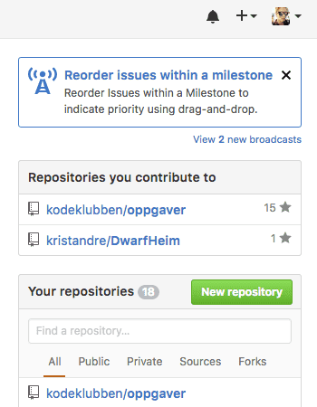
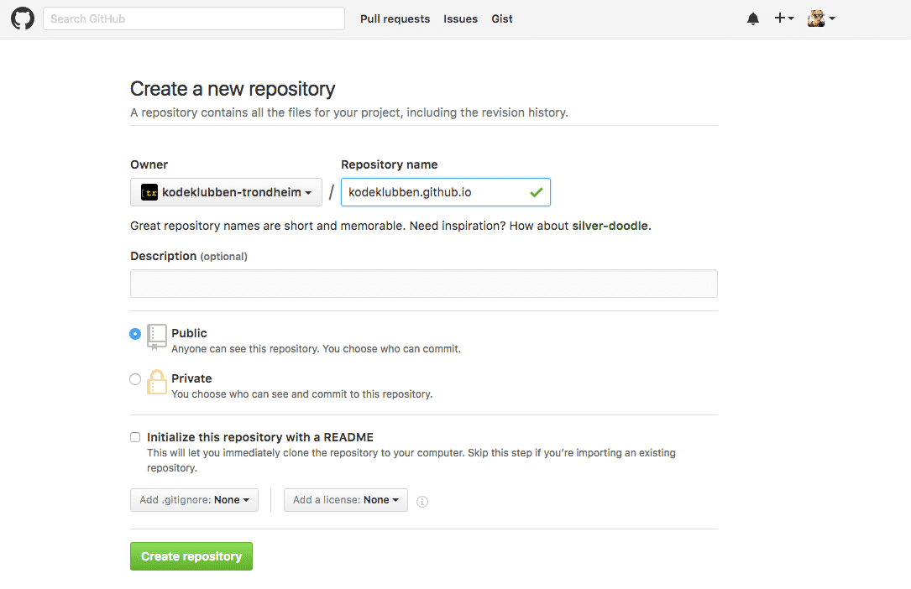
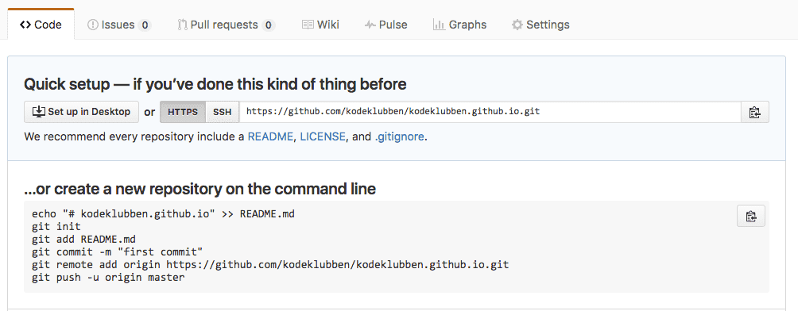
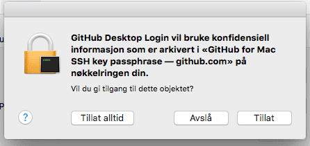
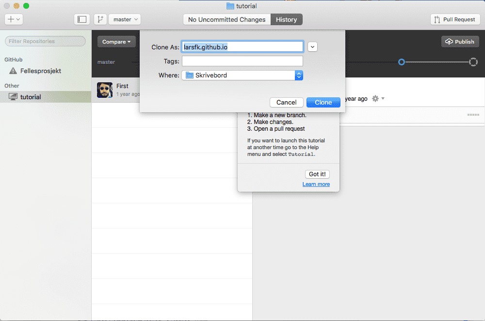
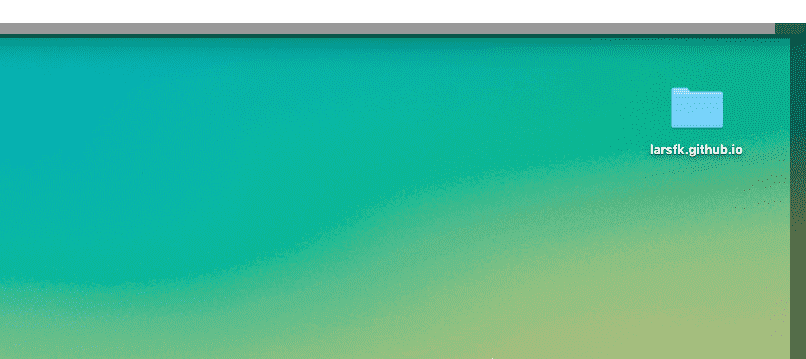
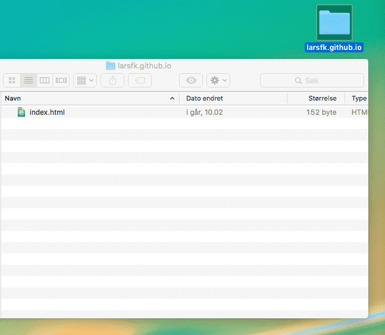
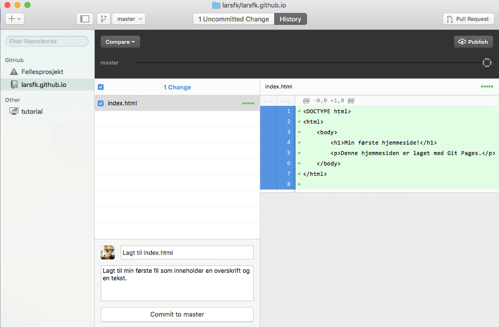
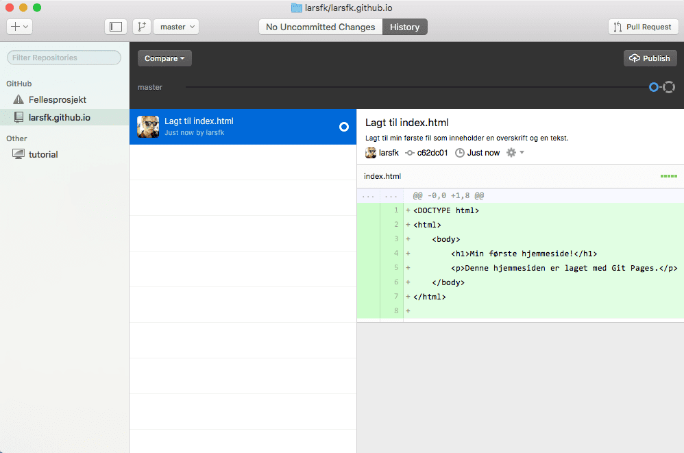
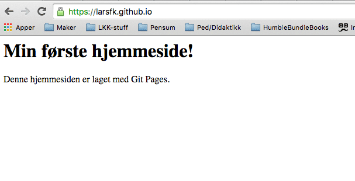

Publiser nettsiden din på Internett
Nå har du laget ditt eget nettsted. Du ønsker vel å vise det frem, gjør du ikke?
Husker du servere fra den første økten? Servere er datamaskiner som alltid er på og koblet til Internett, og de er satt opp slik at folk kan besøke nettsteder som lever på disse datamaskinene.
For å legge nettsiden vår på internett skal vi nå bruke Github Pages. Det er det Kodeklubben bruker: kodeklubben.github.io. For at du skal kunne gjøre dette må du ha en epost-adresse. Du kan enten lage din egen (Gmail), bruk den du har på skolen eller spørre om å låne foreldrene dine sin. Det er viktig her at du husker hvilken epost du har brukt, du må også ha tilgang til eposten slik at du får godkjent brukeren på Github.
Github
Github er en samarbeidsplattform for oss som driver med programmering. Her kan vi legge ut prosjekter som andre kan hjelpe til med, eller vi kan finne et prosjekt vi kan bidra på. På denne måten kan vi enkelt hjelpe, samarbeide og dele med alle som driver med programmering i verden. Vi skal nå lage en GitHub-bruker.
- Gå inn på Github.com
- Skriv inn
Username(brukernavn), epost og password(passord) før du trykker Sign up for Github (se bilde under)
- Følg instruksjonene videre for å godkjenne og lage ferdig brukeren din
Brukernavn.github.io
Nå som vi har en Github-bruker kan vi registrere en github.io-side.
- Logg inn på Github.com med den nye brukeren din, hvis du ikke allerede er logget inn
- Trykk på
New repository (Grønn knapp til høyre eller + øverst i høyre hjørne rett ved siden av probilbildet ditt, se bilde under)

- Under
Repository name så skriver du ditt-brukernavn.github.io. Under ser du et eksempel med kodeklubben.github.io.

- Du kan gjerne skrive en beskrivelse av nettsiden under
Description
- Velg enten
Public(alle kan se koden din) eller Private(koden til nettsiden blir privat). Vi har valgt Public.
- Trykk
Create repository(Lag oppbevaringssted).
Nå skal vi laste ned repository-et eller repo-et vårt, altså oppbevaringsstedet for koden til nettsiden vår. Denne koden legges i en mappe lokalt på datamaskinen vår. I denne mappen legger vi inn alle filene som skal brukes til nettsiden og bruker programmet eller kommandolinjen til Github for å laste opp kode til ditt-brukernavn.github.io-siden vår.
- Trykke på
Set up in Desktop:

Hvis du er vant til å bruke kommandolinjen til Linux eller Mac OS X, så kan du gjøre det som står under ...or create a new repository on the command line.
- Du vil få spørsmål om å laste ned `Github-programmet, takk ja til det.
- Trykk
Tillat på eventuelle ting som dukker opp når Github-programmet åpner seg:

-
Hvis du får spørsmål om å logge inn så logger du bare inn med Github-brukeren du lagde i sted
-
Du får nå spørsmål om å legge mappen ditt-brukernavn.github.io et sted lokalt på datamaskinen, legg det et passende sted hvor du finner det igjen. For eksempel på Skrivebordet eller i Mine dokumenter.
For å ikke ødelegge det vi har på kodeklubben.github.io skal jeg videre vise med brukeren larsfk.github.io.

Da er det på tide å laste opp hjemmesidens første fil!
- Åpne mappen
ditt-brukernavn.github.io. Min heter larsfk.github.io og ligger på Skrivebordet.

-
Åpne din favoritt teksteditor (Atom, NodePad, Brackets IO, NodePad++)
-
Lag index.html og lagre den i mappen ditt-brukernavn.github.io. Dette skal være startsiden til nettsiden vår.

- Skriv noe
HTML i index.html. Du kan gjerne kopiere en av oppgavene du allerede har laget. Hvis du ikke vet hva du skal skrive kan du for eksempel skrive noe sånt:
<DOCTYPE html>
<html>
<body>
<h1>Min første hjemmeside!</h1>
<p>Denne hjemmesiden er laget med Git Pages.<p>
</body>
</html>
Nå skal vi laste opp denne filen til ditt-brukernavn.github.io.
Oppdater ditt-brukernavn.github.io
- Åpne
Github-programmet
- Trykk på
ditt-brukernavn.github.io i kolonnen til venstre
- Trykk på
Compare.

Når du trykker på Compare begynner Github å sammenligne det som ligger i mappen ditt-brukernavn.github.io med det som ligger på nettsiden ditt-brukernavn.github.io. Alt som er grønt er det som er lagt til og alt som blir rødt er det endringer som er fjernet. Under har jeg kun lagt til ny kode, derfor er koden grønn.
- Må du
committe endringene du har gjort før du får lagt opp filen til Github-en din. For å gjøre dette skriver du en kort forklaring i Summary, og litt mer detaljert beskrivelse av hva som er gjort i Description, som vist på bildet over.
- Trykk på
Commit to master når du har skrevet om endringene som er gjort
- Nå kan du trykke på
Publish øverst til høyre

- Hvis du får spørsmål om å
Tillate en operasjon, så gjør det.
- Nå ser vi (se bildet over) at en
commit er lagt til og pushet(lastet opp) til siden vår. Gå inn på ditt-brukernavn.github.io (larsfk.github.io for meg) for å se hjemmesiden din!
NB! Stegene over må du gjøre hver gang du skal oppdatere nettsiden din!

Gratulerer med ny hjemmeside! Denne kan du dele med hvem du vil ved å sende lenken ditt-brukernavn.github.io.
Vil du lære mer om GitHub?
GitHub er et stort tema og kan være litt komplisert og vrient i starten, men jeg hvis du vil lære mer sjekk ut tipsene under: